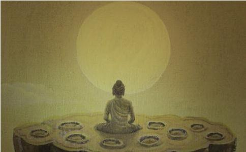

当年五祖弘忍门下，可谓人才济济，堪为人师者，有“十大
而在此十人中，最突出和影响最大的当数慧能和神秀。两人虽然是同一师承，但所传禅法却不尽相同。慧能在南方，其禅法宗《般若》为顿门；神秀在北方，其禅法宗《楞伽》为渐门，世称“南能北秀”或“南顿北渐”。后来南禅北移，其方法更为简便，使神秀在北方的禅法逐渐失势，南禅遂进而形成一统的天下。
慧能（638—713），岭南新州人。三岁丧父，由母亲抚养成人。家境贫寒，只能靠上山打柴和帮人做零活维持生计。一日，慧能上街卖柴，有人买了他的柴，叫他把柴送到旅店。在旅店门口，慧能听到有人诵《
慧能答：“从岭南来。”
弘忍问：“你到这里想干什么？”
慧能答：“不求别事，只求作佛。”
弘忍说：“你这个獦獠，又是岭南人，怎么能够成佛呢？”
慧能答：“人虽然有南北之分，
五祖听了，知道慧能上根利智，非同常人，对这个“卖柴娃”颇为赞赏，遂安排他到碓坊舂米。
舂米是一桩苦差事，慧能生得矮小，体重不够，为了踏碓，他不得不在腰间拴上一块石头增加重量，昼夜不停，勤勤恳恳地干了八个月。
一日，弘忍把大众召集到一起，说：“
当时，五祖门下，以神秀上座最为出色。他是教授师，兼通内外之学，经常为大众讲经
身是菩提树，心如明镜台；时时勤拂拭，莫使惹尘埃。
次日清晨，弘忍看见此偈，知是神秀所作。这首偈子虽然没有明心见性，但依此修行，还是可以获大利益，免堕恶道。故弘忍还是当着众人的面对这首偈子大加赞叹，并且要求大众焚香读诵此偈，依偈而修。但私下里，五祖还是告诉神秀：“你这首偈子，还没有明心见性，见地还不到位，还在门外。如此见解，欲觅无上菩提，了不可得。无上菩提须于当下识自本心、见自本性中觅取。”并吩咐他再作一偈。
一日，慧能正在碓坊舂米，听到外边有人在诵神秀之偈，便上前打听，方得知此事。当时，江州别驾（相当于现在的副州长）张日用正好在旁，慧能说：“我也有一首偈子，请别驾为我写上。”于是慧能念偈道：
菩提本无树，明镜亦非台；本来无一物，何处惹尘埃？
张日用帮他写在壁上，大众看后，无不惊愕！弘忍担心有人会对慧能不利，就把这首偈子抹掉了，还说：“亦未见性。”大家听后，也就不以为意了。
次日，弘忍私下来到碓坊，见慧能腰间系着石头舂米，便说：“求道之人，为法忘躯，就应当像你这个样子。”并问：“米舂熟了吗？”慧能回答：“米熟久矣，犹欠筛在。” 弘忍便用拄杖在碓头上敲了三下离开了。慧能是何等灵醒之人，马上领会了弘忍的意思，于当天晚上三更的时候，偷偷地来到丈室。弘忍用
何期自性本自清净！
何期自性本不生灭！
何期自性本自具足！
何期自性本无动摇！
何期自性能生万法！
弘忍知道慧能已经大悟，便将顿教法门以及祖师衣钵传付给他。
在慧能之前，禅宗一直是单传。自慧能以后，禅宗很快在大江南北盛传开来，并形成了“一花五叶”的繁荣局面。在
神秀（606—706），陈留尉氏人（今河南尉氏县），13岁
神秀的禅法理论，集中体现在他的《观心论》中。弘忍的“守本真心”，以妄心不起，真心不失为
神秀认为，心有“净心”和“染心”两种差别。若随染造恶，则沉沦
神秀把观心和
神秀反对在修行活动中“修伽蓝，铸形象，
神秀在弘忍的众多弟子中，是仅次于慧能的出类拔萃的人物。他不仅学问高深，还深得皇室宠幸。
武则天在光宅元年（684）临朝执政，六年后改国号为周，自称“神圣皇帝”。在中国这个根深蒂固的男权社会里，由一位女性来当皇帝，其难度之大，可想而知，必须要找到充分的理论依据，否则难以服众。中国传统观念认为“牝鸡司晨”是不吉利的，而此时有人发现，佛教《大云经》中，曾讲到一位净光天女为
正是在这种背景之下，神秀被请入洛阳宫中。武则天对神秀非常礼遇，入皇宫时，武则天亲行跪礼。《唐玉泉寺大通禅师碑》云：“趺座觐君，肩舆上殿，屈万乘而稽首，洒九重而宴居。传圣道者不北面，有盛德者无臣礼。遂推为两京法主，三帝国师，仰佛日之再中，庆优昙之一现。”可见皇帝对他圣眷之隆。
神秀人品光明磊落，心量广大，虽然慧能后来居上，得了本该属于他的六祖衣钵，但他并未对慧能有什么成见和嫉妒心，反而推崇备至。他后来荣升“两京（长安、洛阳）法主，三帝国师”，成了武则天的座上宾，“亲加跪礼……时时问道”，我们可以想象，如果在这时，他要在武则天耳边“打点小报告”、“下点烂药”，慧能还能活得成吗？但是，神秀不仅没有这么做，相反，他还一再向武则天推荐慧能，赞扬他比自己更有“道行”。这恐怕是常人难以做到的。武则天听了神秀的推荐，专门派人去岭南恭请慧能上京。虽然慧能托病婉辞，但还是可见神秀的一片好意。唐中宗李显即位后，神秀再次向他推荐慧能，并诚挚地告诉中宗：只有慧能才是五祖弘忍密授法衣的嫡传弟子，其顿悟学说已为天下僧众所接受。由此可见，神秀起码是一个襟怀坦白，正直无私，“对事不对人”的光明磊落的和尚。历史应该这样评价他，才是公允的。
神龙二年（706），年届百岁的神秀示寂，长安城“送葬僧俗，数逾十万”。朝廷追谥为“大通禅师”，并为他建三座大寺，以示纪念。当时的宰相、唐代最具名望的散文家张说（667—730）为其撰写了碑文，备极哀荣。